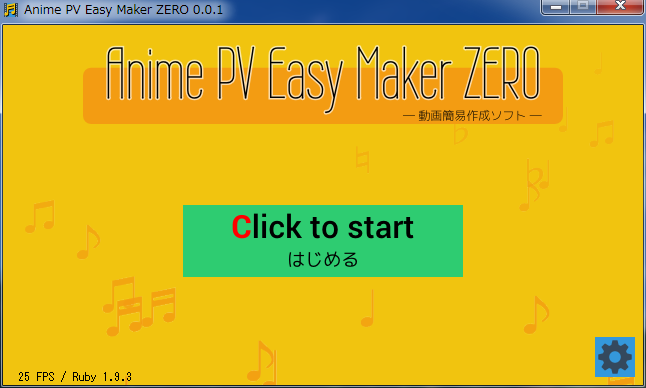

曲に合わせてキーボードを押すだけで、PV(動画)が作れるフリーソフトです。
- ウイザード形式に似た簡単操作。
- サンプル画像/サンプル曲を同梱。すぐに試せます。
- 静止画像を動かしてアニメ・動画にしますので、曲ファイルの他に、写真やイラストを数枚用意するだけで動画を作れます。
- キーを押したタイミングはテキストファイルで記録。本格的動画を作る際のアタリをつける作業にもどうぞ。
- 動画編集ソフト AviUtl+拡張編集プラグイン用の exo ファイルを出力できるので、各カットのアニメの仕方も自由自在。
- 動画変換の元素材として、連番画像を出力できます。
- 動画変換プログラム FFmpeg があれば、バッチファイルを実行するだけで動画に変換できます。
- Windows7 x64
- Windows XP SP3 (32bit)
ダウンロードしたzipファイルを解凍して、フォルダごとお好きな場所に置いてください。
- Windows Vista/7/8 では、C:\Program Files\ 以外の場所に置くことをおすすめします。ソフトを実行すると設定ファイルを作りますが、C:\Program Files\ 以下はファイル書き込みが自由にできないので、動作しない可能性があります。
フォルダごと削除してください。レジストリは使っていません。
解凍したフォルダの中の、anipvmaker.exe を実行してください。
doc/screenshot.html を見てください。
doc/faq.html を見てください。
プログラム部分(*.rb)は、DXRubyのサンプルファイル群と同様に、
Public domain
とします。改造・再配布等、ご自由にどうぞ。
同梱サウンドファイル(*.mp3)のライセンスは、
CC0
(Public domain 相当)
とします。自由に使ってください。
同梱画像(sampledata/image?/*.jpg)のライセンスは、画像提供サイト/ソフトのライセンスを確認してください。以下のサイト/ソフトを利用しています。
同梱フォントのライセンス(.ttf , .bdf)は、フォントファイル/画像と一緒にライセンス内容を記述したテキストファイルを同梱してありますので、そちらを参照してください。以下のフォントを利用しています。
- Windows7 x64
- CPU : Core i5 2500
- メモリ : 8GB
- ビデオカード(GPU) : NVIDIA 9800GTGE
- Ruby 1.9.3 p429 mingw版
- DXRuby 1.5.0 dev
- Ayame/Ruby 0.0.3
- ver 0.0.1 (2013/08/04) とりあえず作成。